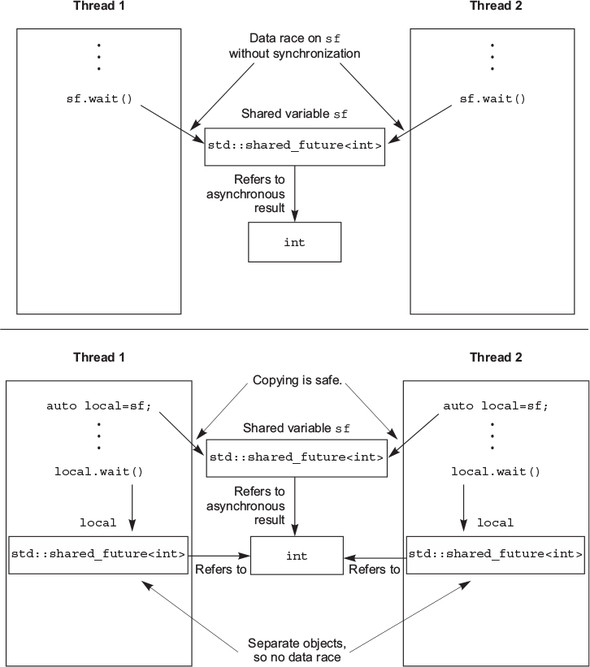
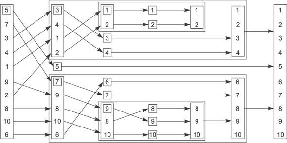
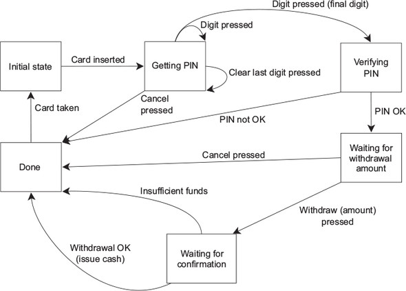

In the last chapter, we looked at various ways of protecting data that’s shared between threads. But sometimes you don’t just need to protect the data, you also need to synchronize actions on separate threads. One thread might need to wait for another thread to complete a task before the first thread can complete its own, for example. In general, it’s common to want a thread to wait for a specific event to happen or a condition to be true. Although it would be possible to do this by periodically checking a “task complete” flag or something similar stored in shared data, this is far from ideal. The need to synchronize operations between threads like this is such a common scenario that the C++ Standard Library provides facilities to handle it, in the form of condition variables and futures. These facilities are extended in the Concurrency Technical Specification (TS), which provides additional operations for futures, alongside new synchronization facilities in the form of latches and barriers.
In this chapter, I’ll discuss how to wait for events with condition variables, futures, latches, and barriers, and how to use them to simplify the synchronization of operations.
Suppose you’re traveling on an overnight train. One way to ensure you get off at the right station would be to stay awake all night and pay attention to where the train stops. You wouldn’t miss your station, but you’d be tired when you got there. Alternatively, you could look at the timetable to see when the train is supposed to arrive, set your alarm a bit before, and go to sleep. That would be OK; you wouldn’t miss your stop, but if the train got delayed, you’d wake up too early. There’s also the possibility that your alarm clock’s batteries would die, and you’d sleep too long and miss your station. What would be ideal is if you could go to sleep and have somebody or something wake you up when the train gets to your station, whenever that is.
How does that relate to threads? Well, if one thread is waiting for a second thread to complete a task, it has several options. First, it could keep checking a flag in shared data (protected by a mutex) and have the second thread set the flag when it completes the task. This is wasteful on two counts: the thread consumes valuable processing time repeatedly checking the flag, and when the mutex is locked by the waiting thread, it can’t be locked by any other thread. Both of these work against the thread doing the waiting: if the waiting thread is running, this limits the execution resources available to run the thread being waited for, and while the waiting thread has locked the mutex protecting the flag in order to check it, the thread being waited for is unable to lock the mutex to set the flag when it’s done. This is akin to staying awake all night talking to the train driver: he has to drive the train more slowly because you keep distracting him, so it takes longer to get there. Similarly, the waiting thread is consuming resources that could be used by other threads in the system and may end up waiting longer than necessary.
A second option is to have the waiting thread sleep for short periods between the checks using the std::this_thread::sleep_for() function (see section 4.3):
bool flag;
std::mutex m;
void wait_for_flag()
{
std::unique_lock<std::mutex> lk(m);
while(!flag)
{
lk.unlock(); 1
std::this_thread::sleep_for(std::chrono::milliseconds(100)); 2
lk.lock(); 3
}
}
In the loop, the function unlocks the mutex 1 before the sleep 2, and locks it again afterward 3 so another thread gets a chance to acquire it and set the flag.
This is an improvement because the thread doesn’t waste processing time while it’s sleeping, but it’s hard to get the sleep period right. Too short a sleep in between checks and the thread still wastes processing time checking; too long a sleep and the thread will keep on sleeping even when the task it’s waiting for is complete, introducing a delay. It’s rare that this oversleeping will have a direct impact on the operation of the program, but it could mean dropped frames in a fast-paced game or overrunning a time slice in a real-time application.
The third and preferred option is to use the facilities from the C++ Standard Library to wait for the event itself. The most basic mechanism for waiting for an event to be triggered by another thread (such as the presence of additional work in the pipeline mentioned previously) is the condition variable. Conceptually, a condition variable is associated with an event or other condition, and one or more threads can wait for that condition to be satisfied. When a thread has determined that the condition is satisfied, it can then notify one or more of the threads waiting on the condition variable in order to wake them up and allow them to continue processing.
The Standard C++ Library provides not one but two implementations of a condition variable: std::condition_variable and std::condition_variable_any. Both of these are declared in the <condition_variable> library header. In both cases, they need to work with a mutex in order to provide appropriate synchronization; the former is limited to working with std::mutex, whereas the latter can work with anything that meets the minimal criteria for being mutex-like, hence the _any suffix. Because std::condition_variable_any is more general, there’s the potential for additional costs in terms of size, performance, or OS resources, so std::condition_variable should be preferred unless the additional flexibility is required.
So, how do you use std::condition_variable to handle the example in the introduction? How do you let the thread that’s waiting for work sleep until there’s data to process? The following listing shows one way you could do this with a condition variable.
std::mutex mut;
std::queue<data_chunk> data_queue; 1
std::condition_variable data_cond;
void data_preparation_thread()
{
while(more_data_to_prepare())
{
data_chunk const data=prepare_data();
{
std::lock_guard<std::mutex> lk(mut);
data_queue.push(data); 2
}
data_cond.notify_one(); 3
}
}
void data_processing_thread()
{
while(true)
{
std::unique_lock<std::mutex> lk(mut); 4
data_cond.wait(
lk,[]{return !data_queue.empty();}); 5
data_chunk data=data_queue.front();
data_queue.pop();
lk.unlock(); 6
process(data);
if(is_last_chunk(data))
break;
}
}
First off, you have a queue 1 that’s used to pass the data between the two threads. When the data is ready, the thread preparing the data locks the mutex protecting the queue using a std::lock_guard and pushes the data onto the queue 2. It then calls the notify_one() member function on the std::condition_variable instance to notify the waiting thread (if there is one) 3. Note that you put the code to push the data onto the queue in a smaller scope, so you notify the condition variable after unlocking the mutex — this is so that, if the waiting thread wakes immediately, it doesn’t then have to block again, waiting for you to unlock the mutex.
On the other side of the fence, you have the processing thread. This thread first locks the mutex, but this time with a std::unique_lock rather than a std::lock_guard 4—you’ll see why in a minute. The thread then calls wait() on the std:: condition_variable, passing in the lock object and a lambda function that expresses the condition being waited for 5. Lambda functions are a new feature in C++11 that allow you to write an anonymous function as part of another expression, and they’re ideally suited for specifying predicates for standard library functions such as wait(). In this case, the simple []{return !data_queue.empty();} lambda function checks to see if the data_queue is not empty()—that is, there’s some data in the queue ready for processing. Lambda functions are described in more detail in appendix A, section A.5.
The implementation of wait() then checks the condition (by calling the supplied lambda function) and returns if it’s satisfied (the lambda function returned true). If the condition isn’t satisfied (the lambda function returned false), wait() unlocks the mutex and puts the thread in a blocked or waiting state. When the condition variable is notified by a call to notify_one() from the data-preparation thread, the thread wakes from its slumber (unblocks it), reacquires the lock on the mutex, and checks the condition again, returning from wait() with the mutex still locked if the condition has been satisfied. If the condition hasn’t been satisfied, the thread unlocks the mutex and resumes waiting. This is why you need the std::unique_lock rather than the std::lock_guard—the waiting thread must unlock the mutex while it’s waiting and lock it again afterward, and std::lock_guard doesn’t provide that flexibility. If the mutex remained locked while the thread was sleeping, the data-preparation thread wouldn’t be able to lock the mutex to add an item to the queue, and the waiting thread would never be able to see its condition satisfied.
Listing 4.1 uses a simple lambda function for the wait 5, which checks to see if the queue is not empty, but any function or callable object could be passed. If you already have a function to check the condition (perhaps because it’s more complicated than a simple test like this), then this function can be passed in directly; there’s no need to wrap it in a lambda. During a call to wait(), a condition variable may check the supplied condition any number of times; but it always does so with the mutex locked and will return immediately if (and only if) the function provided to test the condition returns true. When the waiting thread reacquires the mutex and checks the condition, if it isn’t in direct response to a notification from another thread, it’s called a spurious wake. Because the number and frequency of any such spurious wakes are by definition indeterminate, it isn’t advisable to use a function with side effects for the condition check. If you do so, you must be prepared for the side effects to occur multiple times.
Fundamentally, std::condition_variable::wait is an optimization over a busy-wait. Indeed, a conforming (though less than ideal) implementation technique is just a simple loop:
template<typename Predicate>
void minimal_wait(std::unique_lock<std::mutex>& lk,Predicate pred){
while(!pred()){
lk.unlock();
lk.lock();
}
}
Your code must be prepared to work with such a minimal implementation of wait(), as well as an implementation that only wakes up if notify_one() or notify_all() is called.
The flexibility to unlock a std::unique_lock isn’t just used for the call to wait(); it’s also used once you have the data to process but before processing it 6. Processing data can potentially be a time-consuming operation, and as you saw in chapter 3, it’s a bad idea to hold a lock on a mutex for longer than necessary.
Using a queue to transfer data between threads, as in listing 4.1, is a common scenario. Done well, the synchronization can be limited to the queue itself, which greatly reduces the possible number of synchronization problems and race conditions. In view of this, let’s now work on extracting a generic thread-safe queue from listing 4.1.
If you’re going to be designing a generic queue, it’s worth spending a few minutes thinking about the operations that are likely to be required, as you did with the thread-safe stack back in section 3.2.3. Let’s look at the C++ Standard Library for inspiration, in the form of the std::queue<> container adaptor shown in the following listing.
template <class T, class Container = std::deque<T> >
class queue {
public:
explicit queue(const Container&);
explicit queue(Container&& = Container());
template <class Alloc> explicit queue(const Alloc&);
template <class Alloc> queue(const Container&, const Alloc&);
template <class Alloc> queue(Container&&, const Alloc&);
template <class Alloc> queue(queue&&, const Alloc&);
void swap(queue& q);
bool empty() const;
size_type size() const;
T& front();
const T& front() const;
T& back();
const T& back() const;
void push(const T& x);
void push(T&& x);
void pop();
template <class... Args> void emplace(Args&&... args);
};
If you ignore the construction, assignment, and swap operations, you’re left with three groups of operations: those that query the state of the whole queue (empty() and size()), those that query the elements of the queue (front() and back()), and those that modify the queue (push(), pop() and emplace()). This is the same as you had back in section 3.2.3 for the stack, and therefore you have the same issues regarding race conditions inherent in the interface. Consequently, you need to combine front() and pop() into a single function call, much as you combined top() and pop() for the stack. The code from listing 4.1 adds a new nuance, though: when using a queue to pass data between threads, the receiving thread often needs to wait for the data. Let’s provide two variants on pop(): try_pop(), which tries to pop the value from the queue but always returns immediately (with an indication of failure) even if there wasn’t a value to retrieve; and wait_and_pop(), which waits until there’s a value to retrieve. If you take your lead for the signatures from the stack example, your interface looks like the following.
#include <memory> 1
template<typename T>
class threadsafe_queue
{
public:
threadsafe_queue();
threadsafe_queue(const threadsafe_queue&);
threadsafe_queue& operator=(
const threadsafe_queue&) = delete; 2
void push(T new_value);
bool try_pop(T& value); 3
std::shared_ptr<T> try_pop(); 4
void wait_and_pop(T& value);
std::shared_ptr<T> wait_and_pop();
bool empty() const;
};
As you did for the stack, you’ve cut down on the constructors and eliminated assignment in order to simplify the code. You’ve also provided two versions of both try_pop() and wait_for_pop(), as before. The first overload of try_pop() 3 stores the retrieved value in the referenced variable, so it can use the return value for status; it returns true if it retrieved a value and false otherwise (see section A.2). The second overload 4 can’t do this, because it returns the retrieved value directly. But the returned pointer can be set to NULL if there’s no value to retrieve.
So, how does all this relate to listing 4.1? Well, you can extract the code for push() and wait_and_pop() from there, as shown in the next listing.
#include <queue>
#include <mutex>
#include <condition_variable>
template<typename T>
class threadsafe_queue
{
private:
std::mutex mut;
std::queue<T> data_queue;
std::condition_variable data_cond;
public:
void push(T new_value)
{
std::lock_guard<std::mutex> lk(mut);
data_queue.push(new_value);
data_cond.notify_one();
}
void wait_and_pop(T& value)
{
std::unique_lock<std::mutex> lk(mut);
data_cond.wait(lk,[this]{return !data_queue.empty();});
value=data_queue.front();
data_queue.pop();
}
};
threadsafe_queue<data_chunk> data_queue; 1
void data_preparation_thread()
{
while(more_data_to_prepare())
{
data_chunk const data=prepare_data();
data_queue.push(data); 2
}
}
void data_processing_thread()
{
while(true)
{
data_chunk data;
data_queue.wait_and_pop(data); 3
process(data);
if(is_last_chunk(data))
break;
}
}
The mutex and condition variable are now contained within the threadsafe_queue instance, so separate variables are no longer required 1, and no external synchronization is required for the call to push() 2. Also, wait_and_pop() takes care of the condition variable wait 3.
The other overload of wait_and_pop() is now trivial to write, and the remaining functions can be copied almost verbatim from the stack example in listing 3.5. The final queue implementation is shown here.
#include <queue>
#include <memory>
#include <mutex>
#include <condition_variable>
template<typename T>
class threadsafe_queue
{
private:
mutable std::mutex mut; 1
std::queue<T> data_queue;
std::condition_variable data_cond;
public:
threadsafe_queue()
{}
threadsafe_queue(threadsafe_queue const& other)
{
std::lock_guard<std::mutex> lk(other.mut);
data_queue=other.data_queue;
}
void push(T new_value)
{
std::lock_guard<std::mutex> lk(mut);
data_queue.push(new_value);
data_cond.notify_one();
}
void wait_and_pop(T& value)
{
std::unique_lock<std::mutex> lk(mut);
data_cond.wait(lk,[this]{return !data_queue.empty();});
value=data_queue.front();
data_queue.pop();
}
std::shared_ptr<T> wait_and_pop()
{
std::unique_lock<std::mutex> lk(mut);
data_cond.wait(lk,[this]{return !data_queue.empty();});
std::shared_ptr<T> res(std::make_shared<T>(data_queue.front()));
data_queue.pop();
return res;
}
bool try_pop(T& value)
{
std::lock_guard<std::mutex> lk(mut);
if(data_queue.empty())
return false;
value=data_queue.front();
data_queue.pop();
return true;
}
std::shared_ptr<T> try_pop()
{
std::lock_guard<std::mutex> lk(mut);
if(data_queue.empty())
return std::shared_ptr<T>();
std::shared_ptr<T> res(std::make_shared<T>(data_queue.front()));
data_queue.pop();
return res;
}
bool empty() const
{
std::lock_guard<std::mutex> lk(mut);
return data_queue.empty();
}
};
Even though empty() is a const member function, and the other parameter to the copy constructor is a const reference, other threads may have non-const references to the object, and may be calling mutating member functions, so you still need to lock the mutex. Since locking a mutex is a mutating operation, the mutex object must be marked mutable 1 so it can be locked in empty() and in the copy constructor.
Condition variables are also useful where there’s more than one thread waiting for the same event. If the threads are being used to divide the workload, and thus only one thread should respond to a notification, exactly the same structure as shown in listing 4.1 can be used; just run multiple instances of the data-processing thread. When new data is ready, the call to notify_one() will trigger one of the threads currently executing wait() to check its condition and return from wait() (because you’ve just added an item to the data_queue). There’s no guarantee of which thread will be notified or even if there’s a thread waiting to be notified; all the processing threads might still be processing data.
Another possibility is that several threads are waiting for the same event, and all of them need to respond. This can happen where shared data is being initialized, and the processing threads can all use the same data but need to wait for it to be initialized (although there are potentially better mechanisms for this, such as std::call_once; see section 3.3.1 in chapter 3 for a discussion of the options), or where the threads need to wait for an update to shared data, such as a periodic reinitialization. In these cases, the thread preparing the data can call the notify_all() member function on the condition variable rather than notify_one(). As the name suggests, this causes all the threads currently executing wait() to check the condition they’re waiting for.
If the waiting thread is going to wait only once, so when the condition is true it will never wait on this condition variable again, a condition variable might not be the best choice of synchronization mechanisms. This is especially true if the condition being waited for is the availability of a particular piece of data. In this scenario, a future might be more appropriate.
Suppose you’re going on vacation abroad by plane. Once you get to the airport and clear the various check-in procedures, you still have to wait for notification that your flight is ready for boarding, possibly for several hours. Yes, you might be able to find some means of passing the time, such as reading a book, surfing the internet, or eating in an overpriced airport café, but fundamentally you’re just waiting for one thing: the signal that it’s time to get on the plane. Not only that, but a given flight goes only once; the next time you’re going on vacation, you’ll be waiting for a different flight.
The C++ Standard Library models this sort of one-off event with something called a future. If a thread needs to wait for a specific one-off event, it somehow obtains a future representing that event. The thread can then periodically wait on the future for short periods of time to see if the event has occurred (check the departures board) while performing some other task (eating in the overpriced café) between checks. Alternatively, it can do another task until it needs the event to have happened before it can proceed and then just wait for the future to become ready. A future may have data associated with it (such as which gate your flight is boarding at), or it may not. Once an event has happened (and the future has become ready), the future can’t be reset.
There are two sorts of futures in the C++ Standard Library, implemented as two class templates declared in the <future> library header: unique futures (std::future<>) and shared futures (std::shared_future<>). These are modeled after std::unique_ptr and std::shared_ptr. An instance of std::future is the one and only instance that refers to its associated event, whereas multiple instances of std::shared_future may refer to the same event. In the latter case, all the instances will become ready at the same time, and they may all access any data associated with the event. This associated data is the reason these are templates; just like std::unique_ptr and std::shared_ptr, the template parameter is the type of the associated data. The std:future<void> and std::shared_future<void> template specializations should be used where there’s no associated data. Although futures are used to communicate between threads, the future objects themselves don’t provide synchronized accesses. If multiple threads need to access a single future object, they must protect access via a mutex or other synchronization mechanism, as described in chapter 3. But as you’ll see in section 4.2.5, multiple threads may each access their own copy of std::shared_future<> without further synchronization, even if they all refer to the same asynchronous result.
The Concurrency TS provides extended versions of these class templates in the std::experimental namespace: std::experimental::future<> and std::experimental::shared_future<>. These behave identically to their counterparts in the std namespace, but they have additional member functions to provide additional facilities. It is important to note that the name std::experimental does not imply anything about the quality of the code (I would hope that the implementation will be the same quality as everything else shipped from your library vendor), but highlights that these are non-standard classes and functions, and therefore may not have exactly the same syntax and semantics if and when they are finally adopted into a future C++ Standard. To use these facilities, you must include the <experimental/future> header.
The most basic of one-off events is the result of a calculation that has been run in the background. Back in chapter 2 you saw that std::thread doesn’t provide an easy means of returning a value from such a task, and I promised that this would be addressed in chapter 4 with futures—now it’s time to see how.
Suppose you have a long-running calculation that you expect will eventually yield a useful result but for which you don’t currently need the value. Maybe you’ve found a way to determine the answer to Life, the Universe, and Everything, to pinch an example from Douglas Adams.[1] You could start a new thread to perform the calculation, but that means you have to take care of transferring the result back, because std::thread doesn’t provide a direct mechanism for doing so. This is where the std::async function template (also declared in the <future> header) comes in.
In The Hitchhiker’s Guide to the Galaxy, the computer Deep Thought is built to determine “the answer to Life, the Universe and Everything.” The answer is 42.
You use std::async to start an asynchronous task for which you don’t need the result right away. Rather than giving you a std::thread object to wait on, std::async returns a std::future object, which will eventually hold the return value of the function. When you need the value, you just call get() on the future, and the thread blocks until the future is ready and then returns the value. The following listing shows a simple example.
#include <future>
#include <iostream>
int find_the_answer_to_ltuae();
void do_other_stuff();
int main()
{
std::future<int> the_answer=std::async(find_the_answer_to_ltuae);
do_other_stuff();
std::cout<<"The answer is "<<the_answer.get()<<std::endl;
}
std::async allows you to pass additional arguments to the function by adding extra arguments to the call, in the same way that std::thread does. If the first argument is a pointer to a member function, the second argument provides the object on which to apply the member function (either directly, or via a pointer, or wrapped in std::ref), and the remaining arguments are passed as arguments to the member function. Otherwise, the second and subsequent arguments are passed as arguments to the function or callable object specified as the first argument. Just as with std::thread, if the arguments are rvalues, the copies are created by moving the originals. This allows the use of move-only types as both the function object and the arguments. See the following listing.
#include <string>
#include <future>
struct X
{
void foo(int,std::string const&);
std::string bar(std::string const&);
};
X x;
auto f1=std::async(&X::foo,&x,42,"hello"); 1
auto f2=std::async(&X::bar,x,"goodbye"); 2
struct Y
{
double operator()(double);
};
Y y;
auto f3=std::async(Y(),3.141); 3
auto f4=std::async(std::ref(y),2.718); 4
X baz(X&);
std::async(baz,std::ref(x)); 5
class move_only
{
public:
move_only();
move_only(move_only&&)
move_only(move_only const&) = delete;
move_only& operator=(move_only&&);
move_only& operator=(move_only const&) = delete;
void operator()();
};
auto f5=std::async(move_only()); 6
By default, it’s up to the implementation whether std::async starts a new thread, or whether the task runs synchronously when the future is waited for. In most cases this is what you want, but you can specify which to use with an additional parameter to std::async before the function to call. This parameter is of the type std::launch, and can either be std::launch::deferred to indicate that the function call is to be deferred until either wait() or get() is called on the future, std::launch::async to indicate that the function must be run on its own thread, or std::launch::deferred | std::launch::async to indicate that the implementation may choose. This last option is the default. If the function call is deferred, it may never run. For example:
auto f6=std::async(std::launch::async,Y(),1.2); 1 auto f7=std::async(std::launch::deferred,baz,std::ref(x)); 2 auto f8=std::async( 3 std::launch::deferred | std::launch::async, baz,std::ref(x)); auto f9=std::async(baz,std::ref(x)); 3 f7.wait(); 4
As you’ll see later in this chapter and again in chapter 8, using std::async makes it easy to divide algorithms into tasks that can be run concurrently. However, it’s not the only way to associate a std::future with a task; you can also do it by wrapping the task in an instance of the std::packaged_task<> class template or by writing code to explicitly set the values using the std::promise<> class template. std::packaged_task is a higher-level abstraction than std::promise, so I’ll start with that.
std::packaged_task<> ties a future to a function or callable object. When the std:: packaged_task<> object is invoked, it calls the associated function or callable object and makes the future ready, with the return value stored as the associated data. This can be used as a building block for thread pools (see chapter 9) or other task management schemes, such as running each task on its own thread, or running them all sequentially on a particular background thread. If a large operation can be divided into self-contained sub-tasks, each of these can be wrapped in a std::packaged_task<> instance, and then that instance passed to the task scheduler or thread pool. This abstracts out the details of the tasks; the scheduler just deals with std::packaged_task<> instances rather than individual functions.
The template parameter for the std::packaged_task<> class template is a function signature, like void() for a function taking no parameters with no return value, or int(std::string&,double*) for a function that takes a non-const reference to a std::string and a pointer to a double and returns an int. When you construct an instance of std::packaged_task, you must pass in a function or callable object that can accept the specified parameters and that returns a type that’s convertible to the specified return type. The types don’t have to match exactly; you can construct a std::packaged_task<double(double)> from a function that takes an int and returns a float because the types are implicitly convertible.
The return type of the specified function signature identifies the type of the std::future<> returned from the get_future() member function, whereas the argument list of the function signature is used to specify the signature of the packaged task’s function call operator. For example, a partial class definition for std::packaged_task <std::string(std::vector<char>*,int)> would be as shown in the following listing.
template<>
class packaged_task<std::string(std::vector<char>*,int)>
{
public:
template<typename Callable>
explicit packaged_task(Callable&& f);
std::future<std::string> get_future();
void operator()(std::vector<char>*,int);
};
The std::packaged_task object is a callable object, and it can be wrapped in a std::function object, passed to a std::thread as the thread function, passed to another function that requires a callable object, or even invoked directly. When the std::packaged_task is invoked as a function object, the arguments supplied to the function call operator are passed on to the contained function, and the return value is stored as the asynchronous result in the std::future obtained from get_future(). You can thus wrap a task in a std::packaged_task and retrieve the future before passing the std::packaged_task object elsewhere to be invoked in due course. When you need the result, you can wait for the future to become ready. The following example shows this in action.
Many GUI frameworks require that updates to the GUI be done from specific threads, so if another thread needs to update the GUI, it must send a message to the right thread in order to do so. std:packaged_task provides one way of doing this without requiring a custom message for each and every GUI-related activity, as shown here.
#include <deque>
#include <mutex>
#include <future>
#include <thread>
#include <utility>
std::mutex m;
std::deque<std::packaged_task<void()> > tasks;
bool gui_shutdown_message_received();
void get_and_process_gui_message();
void gui_thread() 1
{
while(!gui_shutdown_message_received()) 2
{
get_and_process_gui_message(); 3
std::packaged_task<void()> task;
{
std::lock_guard<std::mutex> lk(m);
if(tasks.empty()) 4
continue;
task=std::move(tasks.front()); 5
tasks.pop_front();
}
task(); 6
}
}
std::thread gui_bg_thread(gui_thread);
template<typename Func>
std::future<void> post_task_for_gui_thread(Func f)
{
std::packaged_task<void()> task(f); 7
std::future<void> res=task.get_future(); 8
std::lock_guard<std::mutex> lk(m);
tasks.push_back(std::move(task)); 9
return res; 10
}
This code is simple: the GUI thread 1 loops until a message has been received telling the GUI to shut down 2, repeatedly polling for GUI messages to handle 3, such as user clicks, and for tasks on the task queue. If there are no tasks on the queue 4, it loops again; otherwise, it extracts the task from the queue 5, releases the lock on the queue, and then runs the task 6. The future associated with the task will then be made ready when the task completes.
Posting a task on the queue is equally simple: a new packaged task is created from the supplied function 7, the future is obtained from that task 8 by calling the get_future() member function, and the task is put on the list 9 before the future is returned to the caller 10. The code that posted the message to the GUI thread can then wait for the future if it needs to know that the task has been completed, or it can discard the future if it doesn’t need to know.
This example uses std::packaged_task<void()> for the tasks, which wraps a function or other callable object that takes no parameters and returns void (if it returns anything else, the return value is discarded). This is the simplest possible task, but as you saw earlier, std::packaged_task can also be used in more complex situations—by specifying a different function signature as the template parameter, you can change the return type (and thus the type of data stored in the future’s associated state) and also the argument types of the function call operator. This example could easily be extended to allow for tasks that are to be run on the GUI thread to accept arguments and return a value in the std::future rather than just a completion indicator.
What about those tasks that can’t be expressed as a simple function call or those tasks where the result may come from more than one place? These cases are dealt with by the third way of creating a future: using std::promise to set the value explicitly.
When you have an application that needs to handle a lot of network connections, it’s often tempting to handle each connection on a separate thread, because this can make the network communication easier to think about and easier to program. This works well for low numbers of connections (and thus low numbers of threads). Unfortunately, as the number of connections rises, this becomes less suitable; the large numbers of threads consequently consume large amounts of OS resources and potentially cause a lot of context switching (when the number of threads exceeds the available hardware concurrency), impacting performance. In extreme cases, the OS may run out of resources for running new threads before its capacity for network connections is exhausted. In applications with large numbers of network connections, it’s therefore common to have a small number of threads (possibly only one) handling the connections, with each thread dealing with multiple connections at once.
Consider one of these threads handling the connections. Data packets will come in from the various connections being handled in essentially random order, and likewise, data packets will be queued to be sent in random order. In many cases, other parts of the application will be waiting either for data to be successfully sent or for a new batch of data to be successfully received via a specific network connection.
std::promise<T> provides a means of setting a value (of type T) that can later be read through an associated std::future<T> object. A std::promise/std::future pair would provide one possible mechanism for this facility; the waiting thread could block on the future, while the thread providing the data could use the promise half of the pairing to set the associated value and make the future ready.
You can obtain the std::future object associated with a given std::promise by calling the get_future() member function, just like with std::packaged_task. When the value of the promise is set (using the set_value() member function), the future becomes ready and can be used to retrieve the stored value. If you destroy the std::promise without setting a value, an exception is stored instead. Section 4.2.4 describes how exceptions are transferred across threads.
Listing 4.10 shows some example code for a thread that’s processing connections as just described. In this example, you use a std::promise<bool>/std::future<bool> pair to identify the successful transmission of a block of outgoing data; the value associated with the future is a simple success/failure flag. For incoming packets, the data associated with the future is the payload of the data packet.
#include <future>
void process_connections(connection_set& connections)
{
while(!done(connections)) 1
{
for(connection_iterator 2
connection=connections.begin(),end=connections.end();
connection!=end;
++connection)
{
if(connection->has_incoming_data()) 3
{
data_packet data=connection->incoming();
std::promise<payload_type>& p=
connection->get_promise(data.id); 4
p.set_value(data.payload);
}
if(connection->has_outgoing_data()) 5
{
outgoing_packet data=
connection->top_of_outgoing_queue();
connection->send(data.payload);
data.promise.set_value(true); 6
}
}
}
}
The process_connections() function loops until done() returns true 1. Every time it goes through the loop, it checks each connection in turn 2, retrieving incoming data if there is any 3 or sending any queued outgoing data 5. This assumes that an incoming packet has an ID and a payload with the data in it. The ID is mapped to a std::promise (perhaps by a lookup in an associative container) 4, and the value is set to the packet’s payload. For outgoing packets, the packet is retrieved from the outgoing queue and sent through the connection. Once the send has completed, the promise associated with the outgoing data is set to true to indicate successful transmission 6. Whether this maps nicely to the network protocol depends on the protocol; this promise/future style structure may not work for a particular scenario, although it does have a similar structure to the asynchronous I/O support of some OSes.
All the code up to now has completely disregarded exceptions. Although it might be nice to imagine a world in which everything worked all the time, this isn’t the case. Sometimes disks fill up, sometimes what you’re looking for just isn’t there, sometimes the network fails, and sometimes the database goes down. If you were performing the operation in the thread that needed the result, the code could just report an error with an exception, so it would be unnecessarily restrictive to require that everything goes well just because you wanted to use std::packaged_task or std::promise. The C++ Standard Library therefore provides a clean way to deal with exceptions in such a scenario and allows them to be saved as part of the associated result.
Consider the following short snippet of code. If you pass in -1 to the square_root() function, it throws an exception, and this gets seen by the caller:
double square_root(double x)
{
if(x<0)
{
throw std::out_of_range("x<0");
}
return sqrt(x);
}
Now suppose that instead of just invoking square_root() from the current thread
double y=square_root(-1);
you run the call as an asynchronous call:
std::future<double> f=std::async(square_root,-1); double y=f.get();
It would be ideal if the behavior was exactly the same; just as y gets the result of the function call in either case, it would be great if the thread that called f.get() could see the exception too, just as it would in the single-threaded case.
Well, that’s exactly what happens: if the function call invoked as part of std::async throws an exception, that exception is stored in the future in place of a stored value, the future becomes ready, and a call to get() rethrows that stored exception. (Note: the standard leaves it unspecified whether it is the original exception object that’s rethrown or a copy; different compilers and libraries make different choices on this matter.) The same happens if you wrap the function in a std::packaged_task—when the task is invoked, if the wrapped function throws an exception, that exception is stored in the future in place of the result, ready to be thrown on a call to get().
Naturally, std::promise provides the same facility, with an explicit function call. If you wish to store an exception rather than a value, you call the set_exception() member function rather than set_value(). This would typically be used in a catch block for an exception thrown as part of the algorithm, to populate the promise with that exception:
extern std::promise<double> some_promise;
try
{
some_promise.set_value(calculate_value());
}
catch(...)
{
some_promise.set_exception(std::current_exception());
}
This uses std::current_exception() to retrieve the thrown exception; the alternative here would be to use std::make_exception_ptr() to store a new exception directly without throwing:
some_promise.set_exception(std::make_exception_ptr(std::logic_error("foo ")));
This is much cleaner than using a try/catch block if the type of the exception is known, and it should be used in preference; not only does it simplify the code, but it also provides the compiler with greater opportunity to optimize the code.
Another way to store an exception in a future is to destroy the std::promise or std::packaged_task associated with the future without calling either of the set functions on the promise or invoking the packaged task. In either case, the destructor of std::promise or std::packaged_task will store a std::future_error exception with an error code of std::future_errc::broken_promise in the associated state if the future isn’t already ready; by creating a future you make a promise to provide a value or exception, and by destroying the source of that value or exception without providing one, you break that promise. If the compiler didn’t store anything in the future in this case, waiting threads could potentially wait forever.
Up until now, all the examples have used std::future. However, std::future has its limitations, not the least of which being that only one thread can wait for the result. If you need to wait for the same event from more than one thread, you need to use std::shared_future instead.
Although std::future handles all the synchronization necessary to transfer data from one thread to another, calls to the member functions of a particular std::future instance are not synchronized with each other. If you access a single std::future object from multiple threads without additional synchronization, you have a data race and undefined behavior. This is by design: std::future models unique ownership of the asynchronous result, and the one-shot nature of get() makes such concurrent access pointless anyway—only one thread can retrieve the value, because after the first call to get() there’s no value left to retrieve.
If your fabulous design for your concurrent code requires that multiple threads can wait for the same event, don’t despair just yet; std::shared_future allows exactly that. Whereas std::future is only moveable (so ownership can be transferred between instances, but only one instance refers to a particular asynchronous result at a time), std::shared_future instances are copyable (so you can have multiple objects referring to the same associated state).
Now, with std::shared_future, member functions on an individual object are still unsynchronized, so to avoid data races when accessing a single object from multiple threads, you must protect accesses with a lock. The preferred way to use it would be to pass a copy of the shared_future object to each thread, so each thread can access its own local shared_future object safely, as the internals are now correctly synchronized by the library. Accessing the shared asynchronous state from multiple threads is safe if each thread accesses that state through its own std::shared_future object. See figure 4.1.

One potential use of std::shared_future is for implementing parallel execution of something akin to a complex spreadsheet; each cell has a single final value, which may be used by the formulas in multiple other cells. The formulas for calculating the results of the dependent cells can then use std::shared_future to reference the first cell. If all the formulas for the individual cells are then executed in parallel, those tasks that can proceed to completion will do so, whereas those that depend on others will block until their dependencies are ready. This will allow the system to make maximum use of the available hardware concurrency.
Instances of std::shared_future that reference some asynchronous state are constructed from instances of std::future that reference that state. Since std::future objects don’t share ownership of the asynchronous state with any other object, the ownership must be transferred into the std::shared_future using std::move, leaving std::future in an empty state, as if it were a default constructor:
std::promise<int> p; std::future<int> f(p.get_future()); assert(f.valid()); 1 std::shared_future<int> sf(std::move(f)); assert(!f.valid()); 2 assert(sf.valid()); 3
Here, the future f is initially valid 1 because it refers to the asynchronous state of the promise p, but after transferring the state to sf, f is no longer valid 2, whereas sf is 3.
Just as with other movable objects, the transfer of ownership is implicit for rvalues, so you can construct a std::shared_future directly from the return value of the get_future() member function of a std::promise object, for example:
std::promise<std::string> p; std::shared_future<std::string> sf(p.get_future()); 1
Here, the transfer of ownership is implicit; std::shared_future<> is constructed from an rvalue of type std::future<std::string> 1.
std::future also has an additional feature to facilitate the use of std::shared_future, with the new facility for automatically deducing the type of a variable from its initializer (see appendix A, section A.6). std::future has a share() member function that creates a new std::shared_future and transfers ownership to it directly. This can save a lot of typing and makes code easier to change:
std::promise< std::map< SomeIndexType, SomeDataType, SomeComparator,
SomeAllocator>::iterator> p;
auto sf=p.get_future().share();
In this case, the type of sf is deduced to be std::shared_future< std::map< SomeIndexType, SomeDataType, SomeComparator, SomeAllocator>::iterator>, which is rather a mouthful. If the comparator or allocator is changed, you only need to change the type of the promise; the type of the future is automatically updated to match.
Sometimes you want to limit the amount of time you’re waiting for an event, either because you have a hard time limit on how long a particular section of code may take, or because there’s other useful work that the thread can be doing if the event isn’t going to happen soon. To handle this facility, many of the waiting functions have variants that allow a timeout to be specified.
All the blocking calls introduced previously will block for an indefinite period of time, suspending the thread until the event being waited for occurs. In many cases this is fine, but in some cases you may want to put a limit on how long you wait. This might be to allow you to send some form of “I’m still alive” message either to an interactive user, or another process, or indeed to allow you to abort the wait if the user has given up waiting and clicked Cancel.
There are two sorts of timeouts you may wish to specify: a duration-based timeout, where you wait for a specific amount of time (for example, 30 milliseconds); or an absolute timeout, where you wait until a specific point in time (for example, 17:30:15.045987023 UTC on November 30, 2011). Most of the waiting functions provide variants that handle both forms of timeouts. The variants that handle the duration-based timeouts have a _for suffix, and those that handle the absolute timeouts have an _until suffix.
So, for example, std::condition_variable has two overloads of the wait_for() member function and two overloads of the wait_until() member function that correspond to the two overloads of wait()—one overload that just waits until signaled, or the timeout expires, or a spurious wakeup occurs; and another that will check the supplied predicate when woken and will return only when the supplied predicate is true (and the condition variable has been signaled) or the timeout expires.
Before we look at the details of the functions that use the timeouts, let’s examine the way that times are specified in C++, starting with clocks.
As far as the C++ Standard Library is concerned, a clock is a source of time information. Specifically, a clock is a class that provides four distinct pieces of information:
The current time of a clock can be obtained by calling the now() static member function for that clock class; for example, std::chrono::system_clock::now() will return the current time of the system clock. The type of the time points for a particular clock is specified by the time_point member typedef, so the return type of some_clock::now() is some_clock::time_point.
The tick period of the clock is specified as a fractional number of seconds, which is given by the period member typedef of the clock—a clock that ticks 25 times per second has a period of std::ratio<1,25>, whereas a clock that ticks every 2.5 seconds has a period of std::ratio<5,2>. If the tick period of a clock can’t be known until runtime, or it may vary during a given run of the application, the period may be specified as the average tick period, smallest possible tick period, or some other value that the library writer deems appropriate. There’s no guarantee that the observed tick period in a given run of the program matches the specified period for that clock.
If a clock ticks at a uniform rate (whether or not that rate matches the period) and can’t be adjusted, the clock is said to be a steady clock. The is_steady static data member of the clock class is true if the clock is steady, and false otherwise. Typically, std::chrono::system_clock will not be steady, because the clock can be adjusted, even if such adjustment is done automatically to take account of local clock drift. Such an adjustment may cause a call to now() to return a value earlier than that returned by a prior call to now(), which is in violation of the requirement for a uniform tick rate. Steady clocks are important for timeout calculations, as you’ll see shortly, so the C++ Standard Library provides one in the form of std::chrono::steady_clock. The other clocks provided by the C++ Standard Library are std::chrono::system_clock (mentioned earlier), which represents the “real-time” clock of the system and provides functions for converting its time points to and from time_t values, and std::chrono::high_resolution_clock, which provides the smallest possible tick period (and thus the highest possible resolution) of all the library-supplied clocks. It may be a typedef to one of the other clocks. These clocks are defined in the <chrono> library header, along with the other time facilities.
We’ll look at the representation of time points shortly, but first let’s look at how durations are represented.
Durations are the simplest part of the time support; they’re handled by the std:: chrono::duration<> class template (all the C++ time-handling facilities used by the Thread Library are in the std::chrono namespace). The first template parameter is the type of the representation (such as int, long, or double), and the second is a fraction specifying how many seconds each unit of the duration represents. For example, a number of minutes stored in a short is std::chrono::duration<short,std:: ratio<60,1>>, because there are 60 seconds in a minute. On the other hand, a count of milliseconds stored in a double is std::chrono::duration<double,std::ratio <1,1000>>, because each millisecond is 1/1000th of a second.
The Standard Library provides a set of predefined typedefs in the std::chrono namespace for various durations: nanoseconds, microseconds, milliseconds, seconds, minutes, and hours. They all use a sufficiently large integral type for the representation chosen such that you can represent a duration of over 500 years in the appropriate units if you so desire. There are also typedefs for all the SI ratios from std::atto (10–18) to std::exa (1018) (and beyond, if your platform has 128-bit integer types) for use when specifying custom durations such as std::duration<double,std::centi> for a count of 1/100th of a second represented in a double.
For convenience, there are a number of predefined literal suffix operators for durations in the std::chrono_literals namespace, introduced with C++14. This can simplify code that uses hard-coded duration values, such as
using namespace std::chrono_literals; auto one_day=24h; auto half_an_hour=30min; auto max_time_between_messages=30ms;
When used with integer literals, these suffixes are equivalent to using the predefined duration typedefs, so 15ns and std::chrono::nanoseconds(15) are identical values. However, when used with floating-point literals, these suffixes create a suitably-scaled floating-point duration with an unspecified representation type. Therefore, 2.5min will be std::chrono::duration<some-floating-point-type,std::ratio<60,1>>. If you are concerned about the range or precision of the implementation’s chosen floating point type, then you will need to construct an object with a suitable representation yourself, rather than using the convenience of the literal suffixes.
Conversion between durations is implicit where it does not require truncation of the value (so converting hours to seconds is OK, but converting seconds to hours is not). Explicit conversions can be done with std::chrono::duration_cast<>:
std::chrono::milliseconds ms(54802);
std::chrono::seconds s=
std::chrono::duration_cast<std::chrono::seconds>(ms);
The result is truncated rather than rounded, so s will have a value of 54 in this example.
Durations support arithmetic, so you can add and subtract durations to get new durations or multiply or divide by a constant of the underlying representation type (the first template parameter). Thus 5*seconds(1) is the same as seconds(5) or minutes(1) – seconds(55). The count of the number of units in the duration can be obtained with the count() member function. Thus std::chrono::milliseconds(1234).count() is 1234.
Duration-based waits are done with instances of std::chrono::duration<>. For example, you can wait for up to 35 milliseconds for a future to be ready:
std::future<int> f=std::async(some_task);
if(f.wait_for(std::chrono::milliseconds(35))==std::future_status::ready)
do_something_with(f.get());
The wait functions all return a status to indicate whether the wait timed out or the waited-for event occurred. In this case, you’re waiting for a future, so the function returns std::future_status::timeout if the wait times out, std::future_status:: ready if the future is ready, or std::future_status::deferred if the future’s task is deferred. The time for a duration-based wait is measured using a steady clock internal to the library, so 35 milliseconds means 35 milliseconds of elapsed time, even if the system clock was adjusted (forward or back) during the wait. Of course, the vagaries of system scheduling and the varying precisions of OS clocks means that the time between the thread issuing the call and returning from it may be much longer than 35 ms.
With durations under our belt, we can now move on to time points.
The time point for a clock is represented by an instance of the std::chrono::time_point<> class template, which specifies which clock it refers to as the first template parameter and the units of measurement (a specialization of std::chrono::duration<>) as the second template parameter. The value of a time point is the length of time (in multiples of the specified duration) since a specific point in time called the epoch of the clock. The epoch of a clock is a basic property but not something that’s directly available to query or specified by the C++ Standard. Typical epochs include 00:00 on January 1, 1970 and the instant when the computer running the application booted up. Clocks may share an epoch or have independent epochs. If two clocks share an epoch, the time_point typedef in one class may specify the other as the clock type associated with the time_point. Although you can’t find out when the epoch is, you can get the time_since_epoch() for a given time_point. This member function returns a duration value specifying the length of time since the clock epoch to that particular time point.
For example, you might specify a time point as std::chrono::time_point<std:: chrono::system_clock, std::chrono::minutes>. This would hold the time relative to the system clock but measured in minutes as opposed to the native precision of the system clock (which is typically seconds or less).
You can add durations and subtract durations from instances of std::chrono:: time_point<> to produce new time points, so std::chrono::high_resolution_clock:: now() + std::chrono::nanoseconds(500) will give you a time 500 nanoseconds in the future. This is good for calculating an absolute timeout when you know the maximum duration of a block of code, but there are multiple calls to waiting functions within it or nonwaiting functions that precede a waiting function but take up some of the time budget.
You can also subtract one time point from another that shares the same clock. The result is a duration specifying the length of time between the two time points. This is useful for timing blocks of code, for example:
auto start=std::chrono::high_resolution_clock::now(); do_something(); auto stop=std::chrono::high_resolution_clock::now(); std::cout<<"do_something() took " <<std::chrono::duration<double,std::chrono::seconds>(stop-start).count() <<" seconds"<<std::endl;
The clock parameter of a std::chrono::time_point<> instance does more than just specify the epoch, though. When you pass the time point to a wait function that takes an absolute timeout, the clock parameter of the time point is used to measure the time. This has important consequences when the clock is changed, because the wait tracks the clock change and won’t return until the clock’s now() function returns a value later than the specified timeout. If the clock is adjusted forward, this may reduce the total length of the wait (as measured by a steady clock), and if it’s adjusted backward, this may increase the total length of the wait.
As you may expect, time points are used with the _until variants of the wait functions. The typical use case is as an offset from some-clock::now() at a fixed point in the program, although time points associated with the system clock can be obtained by converting from time_t using the std::chrono::system_clock::to_time_point() static member function to schedule operations at a user-visible time. For example, if you have a maximum of 500 milliseconds to wait for an event associated with a condition variable, you might do something like in the following listing.
#include <condition_variable>
#include <mutex>
#include <chrono>
std::condition_variable cv;
bool done;
std::mutex m;
bool wait_loop()
{
auto const timeout= std::chrono::steady_clock::now()+
std::chrono::milliseconds(500);
std::unique_lock<std::mutex> lk(m);
while(!done)
{
if(cv.wait_until(lk,timeout)==std::cv_status::timeout)
break;
}
return done;
}
This is the recommended way to wait for condition variables with a time limit if you’re not passing a predicate to wait. This way, the overall length of the loop is bounded. As you saw in section 4.1.1, you need to loop when using condition variables if you don’t pass in the predicate, in order to handle spurious wakeups. If you use wait_for() in a loop, you might end up waiting almost the full length of time before a spurious wake-up, and the next time through the wait time starts again. This may repeat any number of times, making the total wait time unbounded.
With the basics of specifying timeouts under your belt, let’s look at the functions that you can use timeout with.
The simplest use for a timeout is to add a delay to the processing of a particular thread so that it doesn’t take processing time away from other threads when it has nothing to do. You saw an example of this in section 4.1, where you polled a “done” flag in a loop. The two functions that handle this are std::this_thread::sleep_for() and std::this_thread::sleep_until(). They work like a basic alarm clock: the thread goes to sleep either for the specified duration (with sleep_for()) or until the specified point in time (with sleep_until()). sleep_for() makes sense for examples like those in section 4.1, where something must be done periodically, and the elapsed time is what matters. On the other hand, sleep_until() allows you to schedule the thread to wake at a particular point in time. This could be used to trigger the backups at midnight, or the payroll print run at 6:00 a.m., or to suspend the thread until the next frame refresh when doing a video playback.
Sleeping isn’t the only facility that takes a timeout; you already saw that you can use timeouts with condition variables and futures. You can even use timeouts when trying to acquire a lock on a mutex if the mutex supports it. Plain std::mutex and std::recursive_mutex don’t support timeouts on locking, but std::timed_mutex does, as does std::recursive_timed_mutex. Both these types support try_lock_for() and try_lock_until() member functions that try to obtain the lock within a specified time period or before a specified time point. Table 4.1 shows the functions from the C++ Standard Library that can accept timeouts, their parameters, and their return values. Parameters listed as duration must be an instance of std::duration<>, and those listed as time_point must be an instance of std::time_point<>.
|
Functions |
Return Values |
|
|---|---|---|
| std::this_thread namespace | sleep_for(duration) sleep_until(time_point) | N/A |
| std::condition_variable or std::condition_variable_anywait_for(lock,duration) wait_until(lock,time_point) | std::cv_status::timeout or std::cv_status::no_timeout | |
| wait_for(lock,duration, predicate) wait_until(lock,time_point, predicate) | bool—the return value of the predicate when woken | |
| std::timed_mutex, std::recursive_timed_mutex or std::shared_timed_mutextry_lock_for(duration) try_lock_until(time_point) | bool—true if the lock was acquired, false otherwise | |
| std::shared_timed_mutex | try_lock_shared_for(duration) try_lock_shared_until(time_point) | bool—true if the lock was acquired, false otherwise |
| std::unique_lock<TimedLockable>unique_lock(lockable,duration) unique_lock(lockable,time_point) | N/A—owns_lock() on the newly-constructed object returns true if the lock was acquired, false otherwise | |
| try_lock_for(duration) try_lock_until(time_point) | bool—true if the lock was acquired, false otherwise | |
| std::shared_lock<SharedTimedLockable>shared_lock (lockable,duration) shared_lock(lockable,time_point) | N/A—owns_lock() on the newly-constructed object returns true if the lock was acquired, false otherwise | |
| try_lock_for(duration) try_lock_until(time_point) | bool—true if the lock was acquired, false otherwise | |
| std::future<ValueType> or std::shared_future<ValueType>wait_for(duration) wait_until(time_point) | std::future_status::timeout if the wait timed out, std::future_status::ready if the future is ready, or std::future_status::deferred if the future holds a deferred function that hasn’t yet started |
Now that I’ve covered the mechanics of condition variables, futures, promises, and packaged tasks, it’s time to look at the wider picture and how they can be used to simplify the synchronization of operations between threads.
Using the synchronization facilities described so far in this chapter as building blocks allows you to focus on the operations that need synchronizing rather than the mechanics. One way this can help simplify your code is that it accommodates a much more functional (in the sense of functional programming) approach to programming concurrency. Rather than sharing data directly between threads, each task can be provided with the data it needs, and the result can be disseminated to any other threads that need it through the use of futures.
The term functional programming (FP) refers to a style of programming where the result of a function call depends solely on the parameters to that function and doesn’t depend on any external state. This is related to the mathematical concept of a function, and it means that if you invoke a function twice with the same parameters, the result is exactly the same. This is a property of many of the mathematical functions in the C++ Standard Library, such as sin, cos, and sqrt, and simple operations on basic types, such as 3+3, 6*9, or 1.3/4.7. A pure function doesn’t modify any external state either; the effects of the function are entirely limited to the return value.
This makes things easy to think about, especially when concurrency is involved, because many of the problems associated with shared memory discussed in chapter 3 disappear. If there are no modifications to shared data, there can be no race conditions and thus no need to protect shared data with mutexes either. This is such a powerful simplification that programming languages such as Haskell (http://www.haskell.org/), where all functions are pure by default, are becoming increasingly popular for programming concurrent systems. Because most things are pure, the impure functions that actually do modify the shared state stand out all the more, and it’s therefore easier to reason about how they fit into the overall structure of the application.
The benefits of FP aren’t limited to those languages where it’s the default paradigm, however. C++ is a multiparadigm language, and it’s entirely possible to write programs in the FP style. This is even easier in C++11 than it was in C++98, with the advent of lambda functions (see appendix A, section A.6), the incorporation of std::bind from Boost and TR1, and the introduction of automatic type deduction for variables (see appendix A, section A.7). Futures are the final piece of the puzzle that makes FP-style concurrency viable in C++; a future can be passed around between threads to allow the result of one computation to depend on the result of another, without any explicit access to shared data.
To illustrate the use of futures for FP-style concurrency, let’s look at a simple implementation of the Quicksort algorithm. The basic idea of the algorithm is simple: given a list of values, take an element to be the pivot element, and then partition the list into two sets—those less than the pivot and those greater than or equal to the pivot. A sorted copy of the list is obtained by sorting the two sets and returning the sorted list of values less than the pivot, followed by the pivot, followed by the sorted list of values greater than or equal to the pivot. Figure 4.2 shows how a list of 10 integers is sorted under this scheme. An FP-style sequential implementation is shown in the following listing; it takes and returns a list by value rather than sorting in place like std::sort() does.

template<typename T>
std::list<T> sequential_quick_sort(std::list<T> input)
{
if(input.empty())
{
return input;
}
std::list<T> result;
result.splice(result.begin(),input,input.begin()); 1
T const& pivot=*result.begin(); 2
auto divide_point=std::partition(input.begin(),input.end(),
[&](T const& t){return t<pivot;}); 3
std::list<T> lower_part;
lower_part.splice(lower_part.end(),input,input.begin(),
divide_point); 4
auto new_lower(
sequential_quick_sort(std::move(lower_part))); 5
auto new_higher(
sequential_quick_sort(std::move(input))); 6
result.splice(result.end(),new_higher); 7
result.splice(result.begin(),new_lower); 8
return result;
}
Although the interface is FP-style, if you used FP style throughout, you’d do a lot of copying, so you use “normal” imperative style for the internals. You take the first element as the pivot by slicing it off the front of the list using splice() 1. Although this can potentially result in a suboptimal sort (in terms of numbers of comparisons and exchanges), doing anything else with a std::list can add quite a bit of time because of the list traversal. You know you’re going to want it in the result, so you can splice it directly into the list you’ll be using for that. Now, you’re also going to want to use it for comparisons, so let’s take a reference to it to avoid copying 2. You can then use std::partition to divide the sequence into those values less than the pivot and those not less than the pivot 3. The easiest way to specify the partition criteria is to use a lambda function; you use a reference capture to avoid copying the pivot value (see appendix A, section A.5 for more on lambda functions).
std::partition() rearranges the list in place and returns an iterator marking the first element that’s not less than the pivot value. The full type for an iterator can be quite long-winded, so you just use the auto type specifier to force the compiler to work it out for you (see appendix A, section A.7).
Now, you’ve opted for an FP-style interface, so if you’re going to use recursion to sort the two “halves,” you’ll need to create two lists. You can do this by using splice() again to move the values from input up to the divide_point into a new list: lower_part 4. This leaves the remaining values alone in input. You can then sort the two lists with recursive calls, 5 and 6. By using std::move() to pass the lists in, you can avoid copying here too—the result is implicitly moved out anyway. Finally, you can use splice() yet again to piece the result together in the right order. The new_higher values go on the end 7, after the pivot, and the new_lower values go at the beginning, before the pivot 8.
Because this uses a functional style already, it’s now easy to convert this to a parallel version using futures, as shown in the next listing. The set of operations is the same as before, except that some of them now run in parallel. This version uses an implementation of the Quicksort algorithm using futures and a functional style.
template<typename T>
std::list<T> parallel_quick_sort(std::list<T> input)
{
if(input.empty())
{
return input;
}
std::list<T> result;
result.splice(result.begin(),input,input.begin());
T const& pivot=*result.begin();
auto divide_point=std::partition(input.begin(),input.end(),
[&](T const& t){return t<pivot;});
std::list<T> lower_part;
lower_part.splice(lower_part.end(),input,input.begin(),
divide_point);
std::future<std::list<T> > new_lower( 1
std::async(¶llel_quick_sort<T>,std::move(lower_part)));
auto new_higher(
parallel_quick_sort(std::move(input))); 2
result.splice(result.end(),new_higher); 3
result.splice(result.begin(),new_lower.get()); 4
return result;
}
The big change here is that rather than sorting the lower portion on the current thread, you sort it on another thread using std::async() 1. The upper portion of the list is sorted with direct recursion as before 2. By recursively calling parallel_quick_sort(), you can take advantage of the available hardware concurrency. If std::async() starts a new thread every time, then if you recurse down three times, you’ll have eight threads running; if you recurse down 10 times (for ~1000 elements), you’ll have 1,024 threads running if the hardware can handle it. If the library decides there are too many spawned tasks (perhaps because the number of tasks has exceeded the available hardware concurrency), it may switch to spawning the new tasks synchronously. They will run in the thread that calls get() rather than on a new thread, thus avoiding the overhead of passing the task to another thread when this won’t help the performance. It’s worth noting that it’s perfectly conforming for an implementation of std::async to start a new thread for each task (even in the face of massive oversubscription) unless std::launch::deferred is explicitly specified, or to run all tasks synchronously unless std::launch::async is explicitly specified. If you’re relying on the library for automatic scaling, you’re advised to check the documentation for your implementation to see what behavior it exhibits.
Rather than using std::async(), you could write your own spawn_task() function as a simple wrapper around std::packaged_task and std::thread, as shown in listing 4.14; you’d create a std::packaged_task for the result of the function call, get the future from it, run it on a thread, and return the future. This wouldn’t offer much of an advantage (and indeed would likely lead to massive oversubscription), but it would pave the way to migrate to a more sophisticated implementation that adds the task to a queue to be run by a pool of worker threads. We’ll look at thread pools in chapter 9. It’s probably worth going this way in preference to using std::async only if you know what you’re doing and want complete control over the way the thread pool is built and executes tasks.
Anyway, back to parallel_quick_sort. Because you just used direct recursion to get new_higher, you can splice it into place as before 3. But new_lower is now std::future<std::list<T>> rather than a list, so you need to call get() to retrieve the value before you can call splice() 4. This then waits for the background task to complete and moves the result into the splice() call; get() returns an rvalue reference to the contained result, so it can be moved out (see appendix A, section A.1.1 for more on rvalue references and move semantics).
Even assuming that std::async() makes optimal use of the available hardware concurrency, this still isn’t an ideal parallel implementation of Quicksort. For one thing, std::partition does a lot of the work, and that’s still a sequential call, but it’s good enough for now. If you’re interested in the fastest possible parallel implementation, check the academic literature. Alternatively, you could use the parallel overload from the C++17 Standard Library (see chapter 10).
template<typename F,typename A>
std::future<std::result_of<F(A&&)>::type>
spawn_task(F&& f,A&& a)
{
typedef std::result_of<F(A&&)>::type result_type;
std::packaged_task<result_type(A&&)>
task(std::move(f)));
std::future<result_type> res(task.get_future());
std::thread t(std::move(task),std::move(a));
t.detach();
return res;
}
FP isn’t the only concurrent programming paradigm that eschews shared mutable data; another paradigm is CSP (Communicating Sequential Processes),[2] where threads are conceptually entirely separate, with no shared data but with communication channels that allow messages to be passed between them. This is the paradigm adopted by the programming language Erlang (http://www.erlang.org/) and by the MPI (Message Passing Interface; http://www.mpi-forum.org/) environment commonly used for high-performance computing in C and C++. I’m sure that by now you’ll be unsurprised to learn that this can also be supported in C++ with a bit of discipline; the following section discusses one way to achieve this.
Communicating Sequential Processes, C.A.R. Hoare, Prentice Hall, 1985. Available free online at http://www.usingcsp.com/cspbook.pdf.
The idea of CSP is simple: if there’s no shared data, each thread can be reasoned about entirely independently, purely on the basis of how it behaves in response to the messages that it received. Each thread is therefore effectively a state machine: when it receives a message, it updates its state in some manner and maybe sends one or more messages to other threads, with the processing performed depending on the initial state. One way to write such threads would be to formalize this and implement a Finite State Machine model, but this isn’t the only way; the state machine can be implicit in the structure of the application. Which method works better in any given scenario depends on the exact behavioral requirements of the situation and the expertise of the programming team. However you choose to implement each thread, the separation into independent processes has the potential to remove much of the complication from shared-data concurrency and therefore make programming easier, lowering the bug rate.
True communicating sequential processes have no shared data, with all communication passed through the message queues, but because C++ threads share an address space, it’s not possible to enforce this requirement. This is where the discipline comes in: as application or library authors, it’s our responsibility to ensure that we don’t share data between the threads. Of course, the message queues must be shared in order for the threads to communicate, but the details can be wrapped in the library.
Imagine for a moment that you’re implementing the code for an ATM. This code needs to handle interaction with the person trying to withdraw money and interaction with the relevant bank, as well as control the physical machinery to accept the person’s card, display appropriate messages, handle key presses, issue money, and return their card.
One way to handle everything would be to split the code into three independent threads: one to handle the physical machinery, one to handle the ATM logic, and one to communicate with the bank. These threads could communicate purely by passing messages rather than sharing any data. For example, the thread handling the machinery would send a message to the logic thread when the person at the machine entered their card or pressed a button, and the logic thread would send a message to the machinery thread indicating how much money to dispense, and so forth.
One way to model the ATM logic would be as a state machine. In each state, the thread waits for an acceptable message, which it then processes. This may result in transitioning to a new state, and the cycle continues. The states involved in a simple implementation are shown in figure 4.3. In this simplified implementation, the system waits for a card to be inserted. Once the card is inserted, it then waits for the user to enter their PIN, one digit at a time. They can delete the last digit entered. Once enough digits have been entered, the PIN is verified. If the PIN is not OK, you’re finished, so you return the card to the customer and resume waiting for someone to enter their card. If the PIN is OK, you wait for them to either cancel the transaction or select an amount to withdraw. If they cancel, you’re finished, and you return their card. If they select an amount, you wait for confirmation from the bank before issuing the cash and returning the card or displaying an “insufficient funds” message and returning their card. Obviously, a real ATM is considerably more complex, but this is enough to illustrate the idea.

Having designed a state machine for your ATM logic, you can implement it with a class that has a member function to represent each state. Each member function can then wait for specific sets of incoming messages and handle them when they arrive, possibly triggering a switch to another state. Each distinct message type is represented by a separate struct. Listing 4.15 shows part of a simple implementation of the ATM logic in such a system, with the main loop and the implementation of the first state, waiting for the card to be inserted.
As you can see, all the necessary synchronization for the message passing is entirely hidden inside the message-passing library (a basic implementation of which is given in appendix C, along with the full code for this example).
struct card_inserted
{
std::string account;
};
class atm
{
messaging::receiver incoming;
messaging::sender bank;
messaging::sender interface_hardware;
void (atm::*state)();
std::string account;
std::string pin;
void waiting_for_card() 1
{
interface_hardware.send(display_enter_card()); 2
incoming.wait() 3
.handle<card_inserted>(
[&](card_inserted const& msg) 4
{
account=msg.account;
pin="";
interface_hardware.send(display_enter_pin());
state=&atm::getting_pin;
}
);
}
void getting_pin();
public:
void run() 5
{
state=&atm::waiting_for_card; 6
try
{
for(;;)
{
(this->*state)(); 7
}
}
catch(messaging::close_queue const&)
{
}
}
};
As already mentioned, the implementation described here is grossly simplified from the real logic that would be required in an ATM, but it does give you a feel for the message-passing style of programming. There’s no need to think about synchronization and concurrency issues, just which messages may be received at any given point and which messages to send. The state machine for this ATM logic runs on a single thread, with other parts of the system such as the interface to the bank and the terminal interface running on separate threads. This style of program design is called the Actor model—there are several discrete actors in the system (each running on a separate thread), which send messages to each other to perform the task at hand, and there’s no shared state except that which is directly passed via messages.
Execution starts with the run() member function 5, which sets the initial state to waiting_for_card 6 and then repeatedly executes the member function representing the current state (whatever it is) 7. The state functions are simple member functions of the atm class. The waiting_for_card state function 1 is also simple: it sends a message to the interface to display a “waiting for card” message 2, and then waits for a message to handle 3. The only type of message that can be handled here is a card_inserted message, which you handle with a lambda function 4. You could pass any function or function object to the handle function, but for a simple case like this, it’s easiest to use a lambda. Note that the handle() function call is chained onto the wait() function; if a message is received that doesn’t match the specified type, it’s discarded, and the thread continues to wait until a matching message is received.
The lambda function itself caches the account number from the card in a member variable, clears the current PIN, sends a message to the interface hardware to display something asking the user to enter their PIN, and changes to the “getting PIN” state. Once the message handler has completed, the state function returns, and the main loop then calls the new state function 7.
The getting_pin state function is a bit more complex in that it can handle three distinct types of message, as in figure 4.3. This is shown in the following listing.
void atm::getting_pin()
{
incoming.wait()
.handle<digit_pressed>( 1
[&](digit_pressed const& msg)
{
unsigned const pin_length=4;
pin+=msg.digit;
if(pin.length()==pin_length)
{
bank.send(verify_pin(account,pin,incoming));
state=&atm::verifying_pin;
}
}
)
.handle<clear_last_pressed>( 2
[&](clear_last_pressed const& msg)
{
if(!pin.empty())
{
pin.resize(pin.length()-1);
}
}
)
.handle<cancel_pressed>( 3
[&](cancel_pressed const& msg)
{
state=&atm::done_processing;
}
);
}
This time, there are three message types you can process, so the wait() function has three handle() calls chained on the end, 1, 2, and 3. Each call to handle() specifies the message type as the template parameter and then passes in a lambda function that takes that particular message type as a parameter. Because the calls are chained together in this way, the wait() implementation knows that it’s waiting for a digit_pressed message, a clear_last_pressed message, or a cancel_pressed message. Messages of any other type are again discarded.
This time, you don’t necessarily change state when you get a message. For example, if you get a digit_pressed message, you add it to the pin unless it’s the final digit. The main loop 7 in listing 4.15 will then call getting_pin() again to wait for the next digit (or clear or cancel).
This corresponds to the behavior shown in figure 4.3. Each state box is implemented by a distinct member function, which waits for the relevant messages and updates the state as appropriate.
As you can see, this style of programming can greatly simplify the task of designing a concurrent system, because each thread can be treated entirely independently. It is an example of using multiple threads to separate concerns and as such requires you to explicitly decide how to divide the tasks between threads.
Back in section 4.2, I mentioned that the Concurrency TS provides extended versions of futures. The core part of the extensions is the ability to specify continuations—additional functions that are run automatically when the future becomes ready. Let’s take the opportunity to explore how this can simplify our code.
The Concurrency TS provides new versions of std::promise and std::packaged_task in the std::experimental namespace that all differ from their std originals in the same way: they return instances of std::experimental::future rather than std::future. This enables users to take advantage of the key new feature in std::experimental::future—continuations.
Suppose you have a task running that will produce a result, and a future that will hold the result when it becomes available. You then have some code that needs to run in order to process that result. With std::future you would have to wait for the future to become ready, either with the fully-blocking wait() member function or either of the wait_for() or wait_until() member functions to allow a wait with a timeout. This can be inconvenient, and can complicate the code. What you want is a means of saying “When the data is ready, then do this processing”. This is exactly what continuations give us; unsurprisingly, the member function to add a continuation to a future is called then(). Given a future fut, a continuation is added with the call fut.then(continuation).
Just like std::future, std::experimental::future only allows the stored value to be retrieved once. If that value is being consumed by a continuation, this means it cannot be accessed by other code. Consequently, when a continuation is added with fut.then(), the original future, fut, becomes invalid. Instead, the call to fut.then() returns a new future to hold the result of the continuation call. This is shown in the following code:
std::experimental::future<int> find_the_answer; auto fut=find_the_answer(); auto fut2=fut.then(find_the_question); assert(!fut.valid()); assert(fut2.valid());
The find_the_question continuation function is scheduled to run “on an unspecified thread” when the original future is ready. This gives the implementation freedom to run it on a thread pool or another library-managed thread. As it stands, this gives the implementation a lot of freedom; this is deliberate, with the intention that when continuations are added to a future C++ Standard, the implementers will be able to draw on their experience to better specify the choice of threads and provide users with suitable mechanisms for controlling the choice of threads.
Unlike direct calls to std::async or std::thread, you cannot pass arguments to a continuation function, because the argument is already defined by the library—the continuation is passed a ready future that holds the result that triggered the continuation. Assuming your find_the_answer function returns an int, the find_the_question function referenced in the previous example must take a std::experimental:: future<int> as its sole parameter; for example:
std::string find_the_question(std::experimental::future<int> the_answer);
The reason for this is that the future on which the continuation was chained may end up holding a value or an exception. If the future was implicitly dereferenced to pass the value directly to the continuation, then the library would have to decide how to handle the exception, whereas by passing the future to the continuation, the continuation can handle the exception. In simple cases, this may be done by calling fut.get() and allowing the re-thrown exception to propagate out of the continuation function. Just as for functions passed to std::async, exceptions that escape a continuation are stored in the future that holds the continuation result.
Note that the Concurrency TS doesn’t specify that there is an equivalent to std::async, though implementations may provide one as an extension. Writing such a function is fairly straightforward: use std::experimental::promise to obtain a future, and then spawn a new thread running a lambda that sets the promise’s value to the return value of the supplied function, as in the next listing.
template<typename Func>
std::experimental::future<decltype(std::declval<Func>()())>
spawn_async(Func&& func){
std::experimental::promise<
decltype(std::declval<Func>()())> p;
auto res=p.get_future();
std::thread t(
[p=std::move(p),f=std::decay_t<Func>(func)]()
mutable{
try{
p.set_value_at_thread_exit(f());
} catch(...){
p.set_exception_at_thread_exit(std::current_exception());
}
});
t.detach();
return res;
}
This stores the result of the function in the future, or catches the exception thrown from the function and stores that in the future, just as std::async does. Also, it uses set_value_at_thread_exit and set_exception_at_thread_exit to ensure that thread_local variables have been properly cleaned up before the future becomes ready.
The value returned from a then() call is a fully-fledged future itself. This means that you can chain continuations.
Suppose you have a series of time-consuming tasks to do, and you want to do them asynchronously in order to free up the main thread for other tasks. For example, when the user logs in to your application, you might need to send the credentials to the backend for authentication; then, when the details have been authenticated, make a further request to the backend for information about the user’s account; and finally, when that information has been retrieved, update the display with the relevant information. As sequential code, you might write something like the following listing.
void process_login(std::string const& username,std::string const& password)
{
try {
user_id const id=backend.authenticate_user(username,password);
user_data const info_to_display=backend.request_current_info(id);
update_display(info_to_display);
} catch(std::exception& e){
display_error(e);
}
}
However, you don’t want sequential code; you want asynchronous code so you’re not blocking the UI thread. With plain std::async, you could punt it all to a background thread like the next listing, but that would still block that thread, consuming resources while waiting for the tasks to complete. If you have many such tasks, then you can end up with a large number of threads that are doing nothing except waiting.
std::future<void> process_login(
std::string const& username,std::string const& password)
{
return std::async(std::launch::async,[=](){
try {
user_id const id=backend.authenticate_user(username,password);
user_data const info_to_display=
backend.request_current_info(id);
update_display(info_to_display);
} catch(std::exception& e){
display_error(e);
}
});
}
In order to avoid all these blocked threads, you need some mechanism for chaining tasks as they each complete: continuations. The following listing shows the same overall process, but this time split into a series of tasks, each of which is then chained on the previous one as a continuation.
std::experimental::future<void> process_login(
std::string const& username,std::string const& password)
{
return spawn_async([=](){
return backend.authenticate_user(username,password);
}).then([](std::experimental::future<user_id> id){
return backend.request_current_info(id.get());
}).then([](std::experimental::future<user_data> info_to_display){
try{
update_display(info_to_display.get());
} catch(std::exception& e){
display_error(e);
}
});
}
Note how each continuation takes a std::experimental::future as the sole parameter, and then uses .get() to retrieve the contained value. This means that exceptions get propagated all the way down the chain, so the call to info_to_display.get() in the final continuation will throw if any of the functions in the chain threw an exception, and the catch block here can handle all the exceptions, just like the catch block in listing 4.18 did.
If the function calls to the backend block internally because they’re waiting for messages to cross the network or for a database operation to complete, then you’re not done yet. You may have split the task into its individual parts, but they’re still blocking calls, so you still get blocked threads. What you need is for the backend calls to return futures that become ready when the data is ready, without blocking any threads. In this case, backend.async_authenticate_user(username,password) will now return a std::experimental::future<user_id> rather than a plain user_id.
You might think this would complicate the code, because returning a future from a continuation would give you future<future<some_value>>, or else you’d have to put the .then calls inside the continuations. Thankfully, if you thought that, then you’d be mistaken: the continuation support has a nifty feature called future-unwrapping. If the continuation function you pass to a .then() call returns a future<some_type>, then the .then() call will return a future<some_type> in turn. This means your final code looks like the next listing, and there is no blocking in your asynchronous function chain.
std::experimental::future<void> process_login(
std::string const& username,std::string const& password)
{
return backend.async_authenticate_user(username,password).then(
[](std::experimental::future<user_id> id){
return backend.async_request_current_info(id.get());
}).then([](std::experimental::future<user_data> info_to_display){
try{
update_display(info_to_display.get());
} catch(std::exception& e){
display_error(e);
}
});
}
This is almost as straightforward as the sequential code from listing 4.18, with a little bit more boilerplate around the .then calls and the lambda declarations. If your compiler supports C++14 generic lambdas, then the types of the futures in the lambda parameters can be replaced with auto, which simplifies the code even further:
return backend.async_authenticate_user(username,password).then(
[](auto id){
return backend.async_request_current_info(id.get());
});
If you need anything more complex than simple linear control flow, then you can implement this by putting the logic in one of the lambdas; for truly complex control flow you probably need to write a separate function.
So far, we’ve focused on the continuation support in std::experimental::future. As you might expect, std::experimental::shared_future also supports continuations. The difference here is that std::experimental::shared_future objects can have more than one continuation, and the continuation parameter is a std::experimental:: shared_future rather than a std::experimental::future. This naturally falls out of the shared nature of std::experimental::shared_future—because multiple objects can refer to the same shared state, if only one continuation was allowed, there would be a race condition between two threads that were each trying to add continuations to their own std::experimental::shared_future objects. This is obviously undesirable, so multiple continuations are permitted. Once you have multiple continuations permitted, you may as well allow them to be added via the same std::experimental:: shared_future instance, rather than only allowing one continuation per object. In addition, you can’t package the shared state in a one-shot std::experimental:: future passed to the first continuation, when you’re going to want to also pass it to the second continuation. Thus the parameter passed to the continuation function must also be a std::experimental::shared_future:
auto fut=spawn_async(some_function).share();
auto fut2=fut.then([](std::experimental::shared_future<some_data> data){
do_stuff(data);
});
auto fut3=fut.then([](std::experimental::shared_future<some_data> data){
return do_other_stuff(data);
});
fut is a std::experimental::shared_future due to the share() call, so the continuation function must take a std::experimental::shared_future as its parameter. However, the return value from the continuation is a plain std::experimental:: future—that value isn’t currently shared until you do something to share it—so both fut2 and fut3 are std::experimental::futures.
Continuations aren’t the only enhancement to futures in the Concurrency TS, though they are probably the most important. Also provided are two overloaded functions that allow you to wait for either any one of a bunch of futures to become ready, or all of a bunch of futures to become ready.
Suppose you have a large volume of data to process, and each item can be processed independently. This is a prime opportunity to make use of the available hardware by spawning a set of asynchronous tasks to process the data items, each of them returning the processed data via a future. However, if you need to wait for all the tasks to finish and then gather all the results for some final processing, this can be inconvenient—you have to wait for each future in turn, and then gather the results. If you want to do the result gathering with another asynchronous task, then you either have to spawn it up front so it is occupying a thread that’s waiting, or you have to keep polling the futures and spawn the new task when all the futures are ready. An example of such code is shown in the following listing.
std::future<FinalResult> process_data(std::vector<MyData>& vec)
{
size_t const chunk_size=whatever;
std::vector<std::future<ChunkResult>> results;
for(auto begin=vec.begin(),end=vec.end();beg!=end;){
size_t const remaining_size=end-begin;
size_t const this_chunk_size=std::min(remaining_size,chunk_size);
results.push_back(
std::async(process_chunk,begin,begin+this_chunk_size));
begin+=this_chunk_size;
}
return std::async([all_results=std::move(results)](){
std::vector<ChunkResult> v;
v.reserve(all_results.size());
for(auto& f: all_results)
{
v.push_back(f.get()); 1
}
return gather_results(v);
});
}
This code spawns a new asynchronous task to wait for the results, and then processes them when they are all available. However, because it waits for each task individually, it will repeatedly be woken by the scheduler at 1 as each result becomes available, and then go back to sleep again when it finds another result that is not yet ready. Not only does this occupy the thread doing the waiting, but it adds additional context switches as each future becomes ready, which adds additional overhead.
With std::experimental::when_all, this waiting and switching can be avoided. You pass the set of futures to be waited on to when_all, and it returns a new future that becomes ready when all the futures in the set are ready. This future can then be used with continuations to schedule additional work when the all the futures are ready. See, for example, the next listing.
std::experimental::future<FinalResult> process_data(
std::vector<MyData>& vec)
{
size_t const chunk_size=whatever;
std::vector<std::experimental::future<ChunkResult>> results;
for(auto begin=vec.begin(),end=vec.end();beg!=end;){
size_t const remaining_size=end-begin;
size_t const this_chunk_size=std::min(remaining_size,chunk_size);
results.push_back(
spawn_async(
process_chunk,begin,begin+this_chunk_size));
begin+=this_chunk_size;
}
return std::experimental::when_all(
results.begin(),results.end()).then( 1
[](std::future<std::vector<
std::experimental::future<ChunkResult>>> ready_results)
{
std::vector<std::experimental::future<ChunkResult>>
all_results=ready_results .get();
std::vector<ChunkResult> v;
v.reserve(all_results.size());
for(auto& f: all_results)
{
v.push_back(f.get()); 2
}
return gather_results(v);
});
}
In this case, you use when_all to wait for all the futures to become ready, and then schedule the function using .then rather than async 1. Though the lambda is superficially the same, it takes the results vector as a parameter (wrapped in a future) rather than as a capture, and the calls to get on the futures at 2 do not block, as all the values are ready by the time execution gets there. This has the potential to reduce the load on the system for little change to the code.
To complement when_all, we also have when_any. This creates a future that becomes ready when any of the supplied futures becomes ready. This works well for scenarios where you’ve spawned multiple tasks to take advantage of the available concurrency, but need to do something when the first one becomes ready.
Suppose you are searching a large dataset for a value that meets particular criteria, but if there are multiple such values, then any will do. This is a prime target for parallelism—you can spawn multiple threads, each of which checks a subset of the data; if a given thread finds a suitable value, then it sets a flag indicating that the other threads should stop their search, and then sets the final return value. In this case, you want to do the further processing when the first task completes its search, even if the other tasks haven’t finished cleaning up yet.
Here, you can use std::experimental::when_any to gather the futures together, and provide a new future that is ready when at least one of the original set is ready. Whereas when_all gave you a future that wrapped the collection of futures you passed in, when_any adds a further layer, combining the collection with an index value that indicates which future triggered the combined future to be ready into an instance of the std::experimental::when_any_result class template.
An example of using when_any as described here is shown in the next listing.
std::experimental::future<FinalResult>
find_and_process_value(std::vector<MyData> &data)
{
unsigned const concurrency = std::thread::hardware_concurrency();
unsigned const num_tasks = (concurrency > 0) ? concurrency : 2;
std::vector<std::experimental::future<MyData *>> results;
auto const chunk_size = (data.size() + num_tasks - 1) / num_tasks;
auto chunk_begin = data.begin();
std::shared_ptr<std::atomic<bool>> done_flag =
std::make_shared<std::atomic<bool>>(false);
for (unsigned i = 0; i < num_tasks; ++i) { 1
auto chunk_end =
(i < (num_tasks - 1)) ? chunk_begin + chunk_size : data.end();
results.push_back(spawn_async([=] { 2
for (auto entry = chunk_begin;
!*done_flag && (entry != chunk_end);
++entry) {
if (matches_find_criteria(*entry)) {
*done_flag = true;
return &*entry;
}
}
return (MyData *)nullptr;
}));
chunk_begin = chunk_end;
}
std::shared_ptr<std::experimental::promise<FinalResult>> final_result =
std::make_shared<std::experimental::promise<FinalResult>>();
struct DoneCheck {
std::shared_ptr<std::experimental::promise<FinalResult>>
final_result;
DoneCheck(
std::shared_ptr<std::experimental::promise<FinalResult>>
final_result_)
: final_result(std::move(final_result_)) {}
void operator()( 4
std::experimental::future<std::experimental::when_any_result<
std::vector<std::experimental::future<MyData *>>>>
results_param) {
auto results = results_param.get();
MyData *const ready_result =
results.futures[results.index].get(); 5
if (ready_result)
final_result->set_value( 6
process_found_value(*ready_result));
else {
results.futures.erase(
results.futures.begin() + results.index); 7
if (!results.futures.empty()) {
std::experimental::when_any( 8
results.futures.begin(), results.futures.end())
.then(std::move(*this));
} else {
final_result->set_exception(
std::make_exception_ptr( 9
std::runtime_error("Not found")));
}
}
};
std::experimental::when_any(results.begin(), results.end())
.then(DoneCheck(final_result)); 3
return final_result->get_future(); 10
}
The initial loop 1 spawns off num_tasks asynchronous tasks, each running the lambda function from 2. This lambda captures by copying, so each task will have its own values for chunk_begin and chunk_end, as well as a copy of the shared pointer, done_flag. This avoids any concerns over lifetime issues.
Once all the tasks have been spawned, you want to handle the case that a task returned. This is done by chaining a continuation on the when_any call 3. This time you write the continuation as a class because you want to reuse it recursively. When one of the initial tasks is ready, the DoneCheck function call operator is invoked 4. First, it extracts the value from the future that is ready 5, and then if the value was found, you process it and set the final result 6. Otherwise, you drop the ready future from the collection 7, and if there are still more futures to check, issue a new call to when_any 8, that will trigger its continuation when the next future is ready. If there are no futures left, then none of them found the value, so store an exception instead 9. The return value of the function is the future for the final result 10. There are alternative ways to solve this problem, but I hope this shows how one might use when_any.
Both these examples of using when_all and when_any have used the iterator-range overloads, which take a pair of iterators denoting the beginning and end of a set of futures to wait for. Both functions also come in variadic forms, where they accept a number of futures directly as parameters to the function. In this case, the result is a future holding a tuple (or a when_any_result holding a tuple) rather than a vector:
std::experimental::future<int> f1=spawn_async(func1);
std::experimental::future<std::string> f2=spawn_async(func2);
std::experimental::future<double> f3=spawn_async(func3);
std::experimental::future<
std::tuple<
std::experimental::future<int>,
std::experimental::future<std::string>,
std::experimental::future<double>>> result=
std::experimental::when_all(std::move(f1),std::move(f2),std::move(f3));
This example highlights something important about all the uses of when_any and when_all—they always move from any std::experimental::futures passed in via a container, and they take their parameters by value, so you have to explicitly move the futures in, or pass temporaries.
Sometimes the event that you’re waiting for is for a set of threads to reach a particular point in the code, or to have processed a certain number of data items between them. In these cases, you might be better served using a latch or a barrier rather than a future. Let’s look at the latches and barriers that are provided by the Concurrency TS.
First off, let’s consider what is meant when we talk of a latch or a barrier. A latch is a synchronization object that becomes ready when its counter is decremented to zero. Its name comes from the fact that it latches the output—once it is ready, it stays ready until it is destroyed. A latch is thus a lightweight facility for waiting for a series of events to occur.
On the other hand, a barrier is a reusable synchronization component used for internal synchronization between a set of threads. Whereas a latch doesn’t care which threads decrement the counter—the same thread can decrement the counter multiple times, or multiple threads can each decrement the counter once, or some combination of the two—with barriers, each thread can only arrive at the barrier once per cycle. When threads arrive at the barrier, they block until all of the threads involved have arrived at the barrier, at which point they are all released. The barrier can then be reused—the threads can then arrive at the barrier again to wait for all the threads for the next cycle.
Latches are inherently simpler than barriers, so let’s start with the latch type from the Concurrency TS: std::experimental::latch.
std::experimental::latch comes from the <experimental/latch> header. When you construct a std::experimental::latch, you specify the initial counter value as the one and only argument to the constructor. Then, as the events that you are waiting for occur, you call count_down on your latch object, and the latch becomes ready when that count reaches zero. If you need to wait for the latch to become ready, then you can call wait on the latch; if you only need to check if it is ready, then you can call is_ready. Finally, if you need to both count down the counter and then wait for the counter to reach zero, you can call count_down_and_wait. A basic example is shown in the following listing.
void foo(){
unsigned const thread_count=...;
latch done(thread_count); 1
my_data data[thread_count];
std::vector<std::future<void> > threads;
for(unsigned i=0;i<thread_count;++i)
threads.push_back(std::async(std::launch::async,[&,i]{ 2
data[i]=make_data(i);
done.count_down(); 3
do_more_stuff(); 4
}));
done.wait(); 5
process_data(data,thread_count); 6
} 7
This constructs done with the number of events that you need to wait for 1, and then spawns the appropriate number of threads using std::async 2. Each thread then counts down the latch when it has generated the relevant chunk of data 3 before continuing on with further processing 4. The main thread can wait for all the data to be ready by waiting on the latch 5 before processing the generated data 6. The data processing at 6 will potentially run concurrently with the final processing steps of each thread 4—there is no guarantee that the threads have all completed until the std::future destructors run at the end of the function 7.
One thing to note is that the lambda passed to std::async at 2 captures everything by reference except i, which is captured by value. This is because i is the loop counter, and capturing that by reference would cause a data race and undefined behavior, whereas data and done are things you need to share access to. Also, you only need a latch at all in this scenario because the threads have additional processing to do after the data is ready; otherwise you could wait for all the futures to ensure the tasks were complete before processing the data.
It is safe to access data in the process_data call 6, even though it is stored by tasks running in other threads, because the latch is a synchronization object, so changes visible to a thread that call count_down are guaranteed to be visible to a thread that returns from a call to wait on the same latch object. Formally, the call to count_down synchronizes with the call to wait—we’ll see what that means when we look at the low-level memory ordering and synchronization constraints in chapter 5.
Alongside latches, the Concurrency TS gives us barriers—reusable synchronization objects for synchronizing a group of threads. Let’s look at those next.
The Concurrency TS provides two types of barriers in the <experimental/barrier> header: std::experimental::barrier and std::experimental::flex_barrier. The former is more basic, and potentially therefore has lower overhead, whereas the latter is more flexible, but potentially has more overhead.
Suppose you have a group of threads that are operating on some data. Each thread can do its processing on the data independently of the others, so no synchronization is needed during the processing, but all the threads must have completed their processing before the next data item can be processed, or before the subsequent processing can be done. std::experimental::barrier is targeted at precisely this scenario. You construct a barrier with a count specifying the number of threads involved in the synchronization group. As each thread is done with its processing, it arrives at the barrier and waits for the rest of the group by calling arrive_and_wait on the barrier object. When the last thread in the group arrives, all the threads are released, and the barrier is reset. The threads in the group can then resume their processing and either process the next data item or proceed with the next stage of processing, as appropriate.
Whereas latches latch, so once they are ready they stay ready, barriers do not—barriers release the waiting threads and then reset so they can be used again. They also only synchronize within a group of threads—a thread cannot wait for a barrier to be ready unless it is one of the threads in the synchronization group. Threads can explicitly drop out of the group by calling arrive_and_drop on the barrier, in which case that thread cannot wait for the barrier to be ready anymore, and the count of threads that must arrive in the next cycle is one less than the number of threads that had to arrive in the current cycle.
result_chunk process(data_chunk);
std::vector<data_chunk>
divide_into_chunks(data_block data, unsigned num_threads);
void process_data(data_source &source, data_sink &sink) {
unsigned const concurrency = std::thread::hardware_concurrency();
unsigned const num_threads = (concurrency > 0) ? concurrency : 2;
std::experimental::barrier sync(num_threads);
std::vector<joining_thread> threads(num_threads);
std::vector<data_chunk> chunks;
result_block result;
for (unsigned i = 0; i < num_threads; ++i) {
threads[i] = joining_thread([&, i] {
while (!source.done()) { 6
if (!i) { 1
data_block current_block =
source.get_next_data_block();
chunks = divide_into_chunks(
current_block, num_threads);
}
sync.arrive_and_wait(); 2
result.set_chunk(i, num_threads, process(chunks[i])); 3
sync.arrive_and_wait(); 4
if (!i) { 5
sink.write_data(std::move(result));
}
}
});
}
} 7
Listing 4.26 shows an example of using a barrier to synchronize a group of threads. You have data coming from source, and you’re writing the output to sink, but in order to make use of the available concurrency in the system, you’re splitting each block of data into num_threads chunks. This has to be done serially, so you have an initial block 1 that only runs on the thread for which i==0. All threads then wait on the barrier for that serial code to complete 2 before you reach the parallel region, where each thread processes its individual chunk and updates the result with that 3 before synchronizing again 4. You then have a second serial region where only thread 0 writes the result out to the sink 5. All threads then keep looping until the source reports that everything is done 6. Note that as each thread loops round, the serial section at the bottom of the loop combines with the section at the top; because only thread 0 has anything to do in either of these sections, this is OK, and all the threads will synchronize together at the first use of the barrier 2. When all the processing is done, then all the threads will exit the loop, and the destructors for the joining_thread objects will wait for them all to finish at the end of the outer function 7 (joining_thread was introduced in chapter 2, listing 2.7).
The key thing to note here is that the calls to arrive_and_wait are at the points in the code where it is important that no threads proceed until all threads are ready. At the first synchronization point, all the threads are waiting for thread 0 to arrive, but the use of the barrier provides you with a clean line in the sand. At the second synchronization point, you have the reverse situation: it is thread 0 that is waiting for all the other threads to arrive before it can write out the completed result to the sink.
The Concurrency TS doesn’t just give you one barrier type; as well as std::experimental::barrier, you also get std::experimental::flex_barrier, which is more flexible. One of the ways that it is more flexible is that it allows for a final serial region to be run when all threads have arrived at the barrier, before they are all released again.
The interface to std::experimental::flex_barrier differs from that of std:: experimental::barrier in only one way: there is an additional constructor that takes a completion function, as well as a thread count. This function is run on exactly one of the threads that arrived at the barrier, once all the threads have arrived at the barrier. Not only does it provide a means of specifying a chunk of code that must be run serially, it also provides a means of changing the number of threads that must arrive at the barrier for the next cycle. The thread count can be changed to any number, whether higher or lower than the previous count; it is up to the programmer who uses this facility to ensure that the correct number of threads will arrive at the barrier the next time round.
The following listing shows how listing 4.26 could be rewritten to use std:: experimental::flex_barrier to manage the serial region.
void process_data(data_source &source, data_sink &sink) {
unsigned const concurrency = std::thread::hardware_concurrency();
unsigned const num_threads = (concurrency > 0) ? concurrency : 2;
std::vector<data_chunk> chunks;
auto split_source = [&] { 1
if (!source.done()) {
data_block current_block = source.get_next_data_block();
chunks = divide_into_chunks(current_block, num_threads);
}
};
split_source(); 2
result_block result;
std::experimental::flex_barrier sync(num_threads, [&] { 3
sink.write_data(std::move(result));
split_source(); 4
return -1; 5
});
std::vector<joining_thread> threads(num_threads);
for (unsigned i = 0; i < num_threads; ++i) {
threads[i] = joining_thread([&, i] {
while (!source.done()) { 6
result.set_chunk(i, num_threads, process(chunks[i]));
sync.arrive_and_wait(); 7
}
});
}
}
The first difference between this code and listing 4.26 is that you’ve extracted a lambda that splits the next data block into chunks 1. This is called before you start 2, and encapsulates the code that was run on thread 0 at the start of each iteration.
The second difference is that your sync object is now a std::experimental::flex_barrier, and you are passing a completion function as well as a thread count 3. This completion function is run on one thread after each thread has arrived, and so can encapsulate the code that was to be run on thread 0 at the end of each iteration, and then there’s a call to your newly-extracted split_source lambda that would have been called at the start of the next iteration 4. The return value of -1 5 indicates that the number of participating threads is to remain unchanged; a return value of zero or more would specify the number of participating threads in the next cycle.
The main loop 6 is now simplified: it only contains the parallel portion of the code, and thus only needs a single synchronization point 7. The use of std:: experimental::flex_barrier has thus simplified the code.
The use of the completion function to provide a serial section is quite powerful, as is the ability to change the number of participating threads. For example, this could be used by pipeline style code where the number of threads is less during the initial priming of the pipeline and the final draining of the pipeline than it is during the main processing, when all the stages of the pipeline are operating.
Synchronizing operations between threads is an important part of writing an application that uses concurrency: if there’s no synchronization, the threads are essentially independent and might as well be written as separate applications that are run as a group because of their related activities. In this chapter, I’ve covered various ways of synchronizing operations from the basic condition variables, through futures, promises, packaged tasks, latches, and barriers. I’ve also discussed ways of approaching the synchronization issues: functional-style programming, where each task produces a result entirely dependent on its input rather than on the external environment; message passing, where communication between threads is via asynchronous messages sent through a messaging subsystem that acts as an intermediary; and continuation style, where the follow-on tasks for each operation are specified, and the system takes care of the scheduling.
Having discussed many of the high-level facilities available in C++, it’s now time to look at the low-level facilities that make it all work: the C++ memory model and atomic operations.